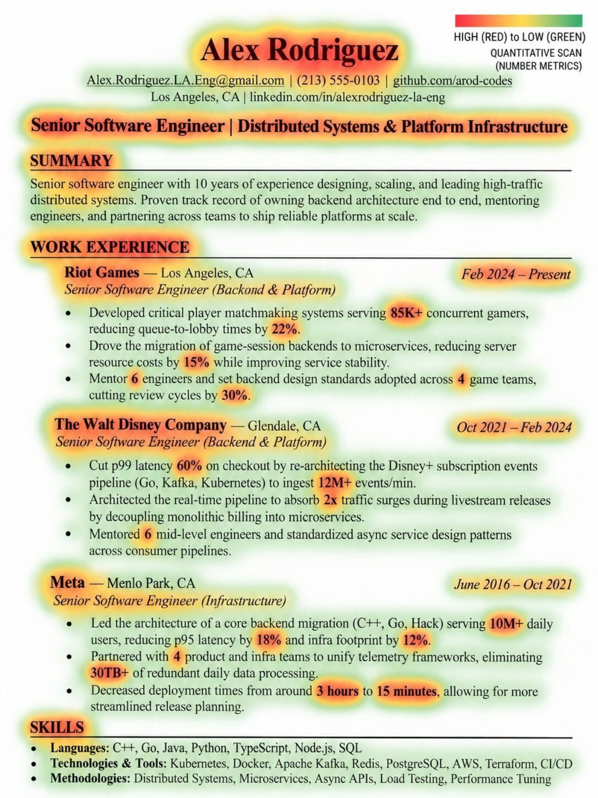

01What's in the kit
Every file opens or downloads from this site. Read the Quick Guide first.
- 01 · 25 slides · read first
Quick Guide
How AI hiring works across all five stages, from screening to team fit, and what every resume section must show. About 20 minutes.
- 02 · 72 pages · the deep dive
Full Guide
What to write in each section, how to pass ATS, 10 mistakes that cost interviews, a FAANG data science resume breakdown, and how to build an industry-level AI project.
- 03 · .docx
Word template
Clean, single-column and ATS-friendly. Fill it in, then export it as a PDF.
- 04 · .tex · Overleaf
LaTeX template
Filled with a sample AI Engineer resume, so you can see what strong bullets look like. Replace everything with your own.
- 05 · .png
Heatmap example
One picture that shows why numbers matter. It is explained further down this page.

02Your 7-day plan
Follow it in order and your resume is ready in a week.
- Day 1Read the Quick GuideEnd to end. Note three things your current resume gets wrong.
- Day 2Rebuild in one templateOne page. Standard titles: Experience, Education, Projects, Skills. No columns, icons or graphics.
- Day 3Put a number in every bulletUse the formula: accomplished X, measured by Y, by doing Z.
- Day 4Match one real jobPick a job description you want. Use its keywords in your summary and skills, only where they are true.
- Day 5Test every linkClick every GitHub, LinkedIn and demo link. Fix anything broken or private.
- Days 6–7Upgrade your best projectRun it through the portfolio checklist at the end of the Full Guide: README, baseline, evaluation, demo, deployment.
03Numbers are what a recruiter remembers

This heatmap marks every number on a sample resume: red where there are numbers, green where there are none.
The bullets stand out because of numbers like 85K+ users, a 60% latency cut, and 3 hours down to 15 minutes. The summary has no numbers, so it is all green and nothing sticks.
Before you call your resume done, check every bullet for a number. If one is missing, find the real figure and add it.
The sample is a backend engineer's resume. Use it for the lesson on numbers, and the templates for structure.
04Let AI do the heavy lifting
Paste these into ChatGPT, Claude or Gemini, and attach your resume where the prompt asks for it.
1 · Fill the template, no LaTeX needed
Here is my current resume and a LaTeX resume template. Put my details into this template, 1 page max. Don't add anything I haven't given you.
Then paste the output into Overleaf, recompile and download the PDF.
2 · Make every bullet hit hard
Rewrite each bullet as: Accomplished X, measured by Y, by doing Z. If a bullet has no number, don't invent one. Ask me questions to find the real number.
3 · Match a specific job
Here is a job description and my resume. List the top 15 keywords from the JD, mark which are missing from my resume, and suggest where I can honestly add them.
4 · Turn a project into bullets
Here is my GitHub README. Write 2–3 resume bullets: problem, solution + tech stack, impact with metrics. Then tell me what's missing: baseline, evaluation, failure cases, deployment, demo.
5 · Full ATS audit
Use the ATS checker prompt on page 25 of the Full Guide, then cross-check for free on Jobscan or Resume Worded.
6 · Practise before the real interview
Act as an interviewer for [role]. Ask me 10 questions based only on my resume, one at a time, and give feedback on each answer.
AI polishes. You bring the facts. Never put a number on your resume that you can't explain in an interview: every line is fair game.
The AI & Data Science Resume Kit is by Shivank Agrawal (Future with Shivank). For the projects to put on your resume, see the AWS AI Capstone.